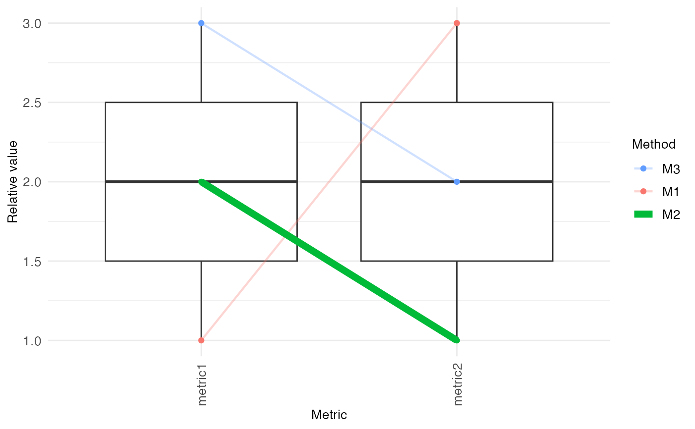

Create a parallel coordinates plot. The input arguments for this functions
are typically generated using bettrGetReady, which ensures
that all required columns are available.
makeParCoordPlot(
bettrList = NULL,
plotdata,
idCol,
metricCol = "Metric",
valueCol = "ScaledValue",
metricGroupCol = "metricGroup",
metricColors,
idColors,
methods = NULL,
metricGrouping = "---",
highlightMethod = NULL,
labelSize = 10
)A list, the output object from prepData.
If bettrList is provided, arguments plotdata,
scoredata, idCol, metricCol, valueCol,
weightCol, scoreCol, metricGroupCol,
metricInfo, metricColors, idInfo, idColors,
metricCollapseGroup, metricGrouping and methods
will be ignored and the corresponding values will be extracted from
bettrList. This is the recommended way of calling the plotting
functions, as it ensures compatibility of all components.
A data.frame with columns representing methods,
metrics, scores, and weights. Typically obtained as
prepData$plotdata, where prepData is the output from
bettrGetReady.
Character scalar indicating which column of plotdata and
scoredata contains the method IDs.
Character scalar indicating which column of plotdata
contains the metric IDs. Typically, "Metric".
Character scalar indicating which column of plotdata
contains the metric values. Typically, "ScaledValue".
Character scalar indicating which column of
plotdata contains the information about the metric group.
Typically, "metricGroup".
Named list with colors used for the metrics and
any other metric annotations. Typically obtained as
prepData$metricColors, where prepData is the output from
bettrGetReady.
Named list with colors used for methods and any other
method annotations. Typically obtained as prepData$idColors,
where prepData is the output from bettrGetReady.
Character vector containing the methods to include.
If NULL (default), all methods will be used.
Character scalar indicating the column of
metricInfo that was used to group metrics. Typically obtained as
prepData$metricGrouping, where prepData is the output
from bettrGetReady.
Character scalar indicating a method that should be highlighted in the plot.
Numeric scalar providing the size of the labels in the plot.
A ggplot object.
## Generate example data
df <- data.frame(Method = c("M1", "M2", "M3"),
metric1 = c(1, 2, 3),
metric2 = c(3, 1, 2))
metricInfo <- data.frame(Metric = c("metric1", "metric2", "metric3"),
Group = c("G1", "G2", "G2"))
idInfo <- data.frame(Method = c("M1", "M2", "M3"),
Type = c("T1", "T1", "T2"))
prepData <- bettrGetReady(df = df, idCol = "Method",
metricInfo = metricInfo, idInfo = idInfo)
makeParCoordPlot(bettrList = prepData, highlightMethod = "M2")
